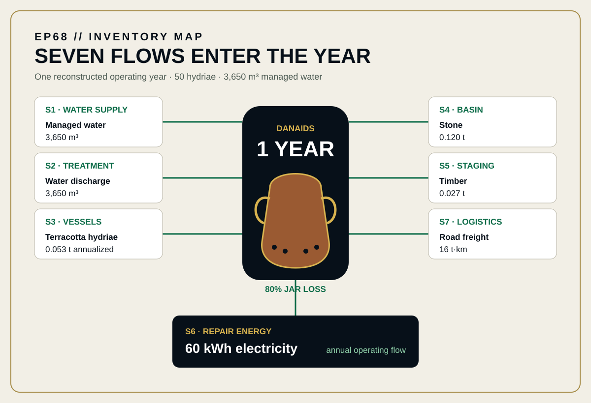
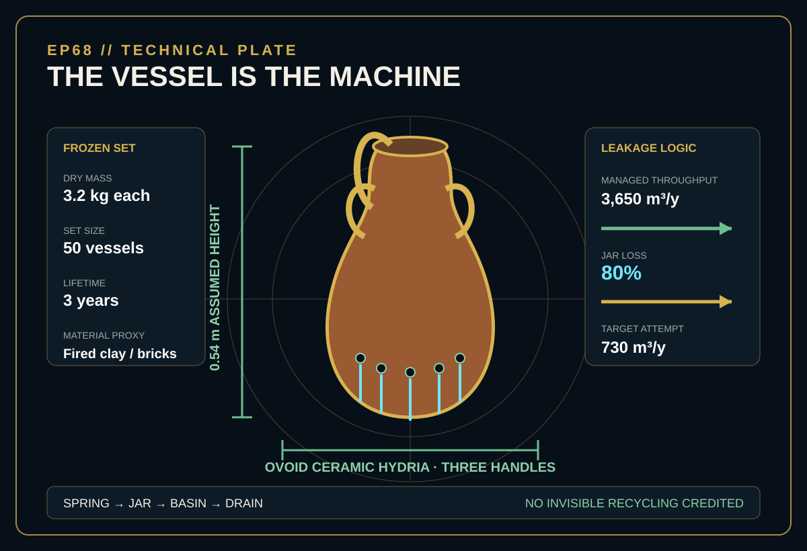
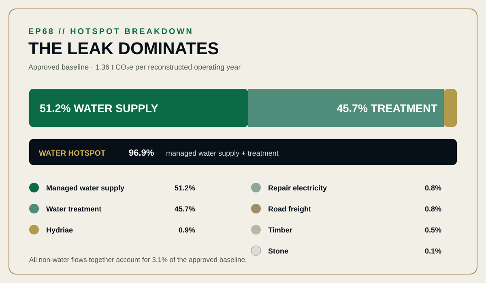

EPISODE #68 · MYTHS & LEGENDS
The Jars of the Danaids
How much carbon does an endless leak create in one operating year?
Narrative engineering reconstruction — not a verified LCA or comparative assertion.
THE SUBJECT
A failing service with a measurable flow
The approved episode fixes a finite reporting slice around an endless punishment: one reconstructed operating year in which 50 Danaids use perforated hydriae to attempt to move 730 m³ of water into a bottomless cistern. At the baseline 80% jar-loss rate, that attempt requires 3,650 m³ of managed water supply and discharge.
Museum hydria evidence anchors the vessel form. The 0.54 m height, 3.2 kg dry mass, set of 50 vessels, three-year life, basin, timber staging, repair electricity and freight are declared reconstruction inputs. The service closes when water exits the bottomless cistern; no invisible recycling is credited.
50 perforated hydriae
Each vessel is modelled at 0.54 m high and 3.2 kg dry mass.
3,650 m³/y managed water
Supply and treatment follow the complete annual throughput.
80% jar loss
Only 730 m³/y reaches the target attempt in the baseline reconstruction.
96.9% water hotspot
Managed water supply and treatment dominate the approved baseline.
VISUAL MODEL
The vessel is small. Repetition builds the system.
The inventory map separates annual water throughput from annualized materials, repair energy and freight. The technical plate freezes the hydria geometry and leakage logic before calculation.


DETAILED LIFE CYCLE INVENTORY
Seven flows enter the year
Activity data and source IDs follow the approved episode. Climate-change contributions use the corresponding full-precision 2026 UK Government factors; the episode prints shortened factor labels on-page.
| Stage | Component / activity | Activity data | Climate change | Modelling basis |
|---|---|---|---|---|
| Operation | Managed water supply | 3,650 m³ | 698 kg CO₂e · 51.2% | S1 · Water supply: 0.1913 kg CO₂e/m³. UK Government 2026 full set. |
| Operation | Water treatment | 3,650 m³ | 624 kg CO₂e · 45.7% | S2 · Water treatment: 0.17088 kg CO₂e/m³. Complete discharge follows annual throughput. |
| Vessels | Terracotta hydriae | 0.053 t | 12.8 kg CO₂e · 0.9% | S3 · Bricks proxy: 241.80307 kg CO₂e/t. Fifty 3.2 kg vessels annualized across a three-year life. |
| Infrastructure | Stone basin | 0.120 t | 0.94 kg CO₂e · 0.1% | S4 · Aggregates: 7.80307 kg CO₂e/t. Approved annualized inventory quantity. |
| Infrastructure | Timber staging | 0.027 t | 7.28 kg CO₂e · 0.5% | S5 · Wood: 269.50416 kg CO₂e/t. Approved annualized inventory quantity. |
| Repair | Repair electricity | 60 kWh | 11.1 kg CO₂e · 0.8% | S6 · UK electricity including generation, T&D and WTT: 0.18436 kg CO₂e/kWh. |
| Logistics | Road freight | 16 t·km | 10.6 kg CO₂e · 0.8% | S7 · Non-refrigerated rigid HGV, >3.5–7.5 t, average laden including WTT: 0.66297 kg CO₂e/t·km. Activity basis: 0.200 t × 80 km. |
| Approved baseline total | 1.36 t CO₂e/year | Full-precision calculation: 1.365 t CO₂e/year before headline rounding. | ||
Included
Water supply, discharge, hydriae, basin, timber, repair energy and freight.
Excluded
Human metabolism, divine infrastructure, lighting and land occupation.
Cut-off
The service ends when water exits the bottomless cistern.
Proxy disclosure
Fired-clay pottery uses the bricks factor. Mythic spring water is tested separately as a zero-emission case.
HOTSPOT
The jars matter less than the water they waste
Managed water supply and treatment contribute 96.9% of the approved baseline. Every other modelled flow shares the remaining 3.1%.

Main result
1.36 t CO₂e/year
One reconstructed operating year.
Managed water
96.9%
Supply and treatment dominate the baseline.
Hydriae
0.9%
Annualized over the declared three-year vessel life.
Jar loss
80%
The baseline physical leakage assumption.
Target attempt
730 m³/y
Reached through 3,650 m³/y of managed throughput.
SENSITIVITY · JAR LEAKAGE
The physical range runs from 0.798 to 2.687 t CO₂e/year
Low leakage: 65% → 0.798 t CO₂e/year.
Baseline: 80% → 1.365 t CO₂e/year.
High leakage: 90% → 2.687 t CO₂e/year.
Only the jar leakage rate changes. The target attempt, vessels, factors and annualized construction remain fixed.
SENSITIVITY · WATER SOURCE
The source model changes the scale
Mythic spring: 0.043 t CO₂e/year.
Managed water: 1.365 t CO₂e/year.
Desalinated proxy: 2.349 t CO₂e/year.
The mythic spring assigns zero emissions to water. The desalinated case applies the published 2.5 kWh/m³ reverse-osmosis proxy while retaining water treatment.
INTERPRETATION
Throughput wins
The hydria is the physical machine, but repetition determines the footprint. Jar leakage multiplies the water required for the same target attempt, while the source model determines the carbon intensity of that throughput. A futile service becomes environmental because it repeats.
THE VERDICT
“A futile system is an efficiency loss made eternal.”